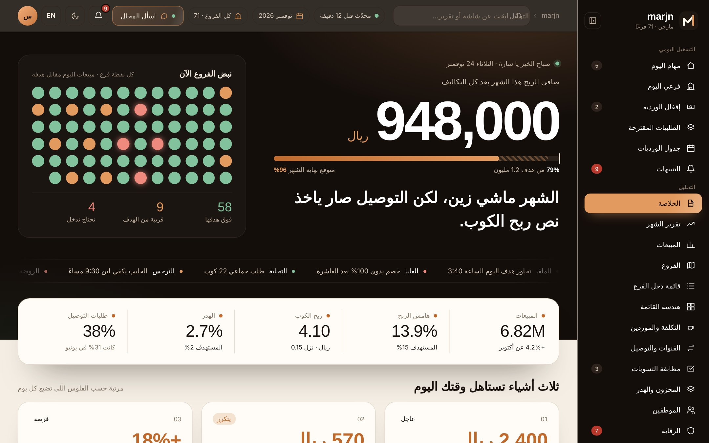
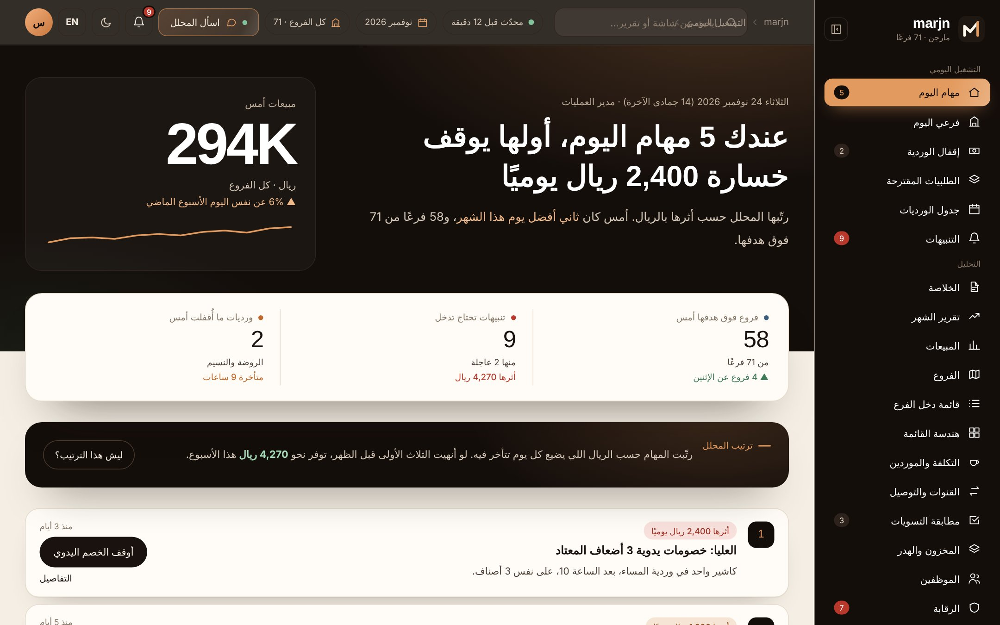
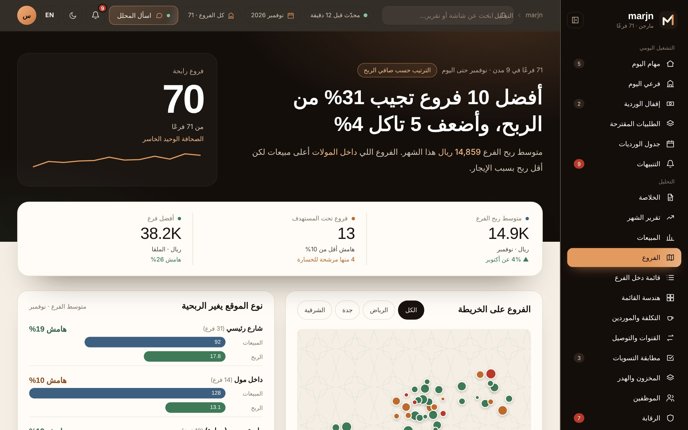
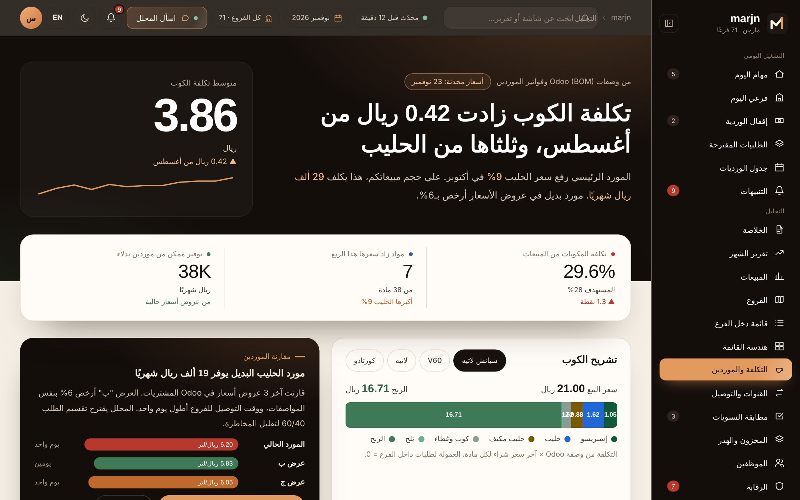
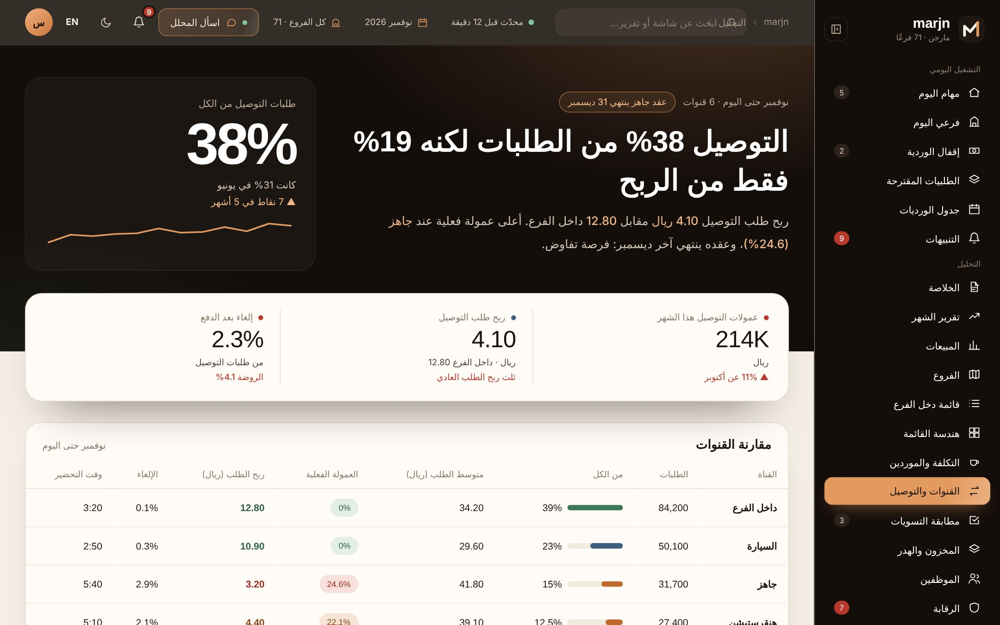
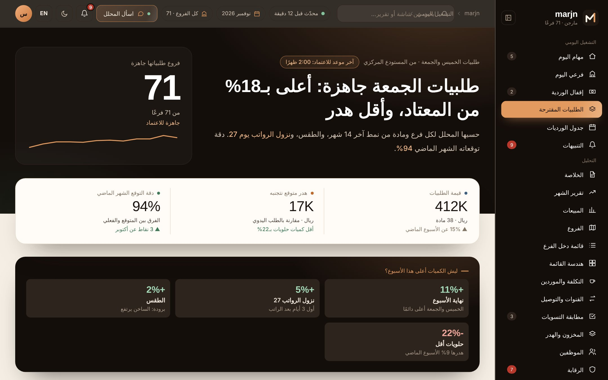
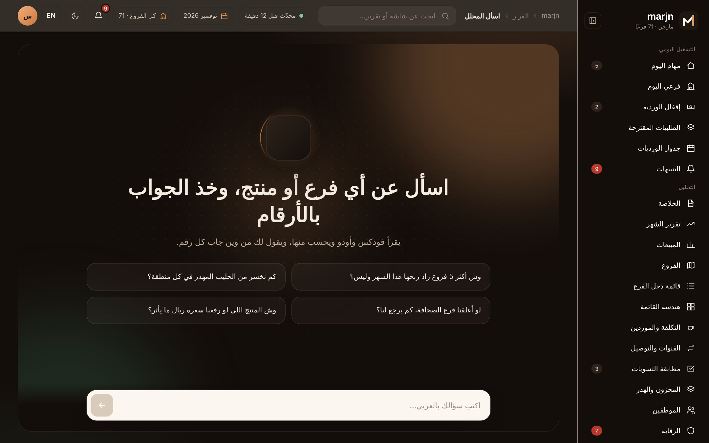

marjn · مارجن
منصة تربط مبيعات Foodics بتكاليف Odoo، وتعطي كل مدير في آرش صورة واضحة عن الربح الحقيقي: لكل فرع ومنتج وقناة.
عرض تعريفي لشركة آرش · نوفمبر 2026
الوضع اليوم
في مناطق مختلفة، وكل فرع له مبيعاته ومخزونه وفريقه.
تدخل من Foodics إلى Odoo، وتثقّل النظام أحياناً.
Foodics يعرف وش انباع، وOdoo يعرف كم كلّف. ما في شاشة تجمعهم.
التقارير اليوم تسويات مبيعات ومدفوعات. ما تجاوب: أي فرع وأي منتج وأي قناة تربح فعلاً بعد التكلفة؟
الفكرة
يسحب من Foodics وOdoo بصلاحية قراءة. ما يغيّر أي شي في أنظمة آرش، وما يحتاج تغيير طريقة الشغل.
سعر البيع ناقص تكلفة الوصفة والهدر وعمولة التوصيل، لكل كوب وفرع وقناة.
مهام وتنبيهات وطلبيات مقترحة، بدل جداول تحتاج أحد يحللها.
الأرقام تتحدث ثلاث مرات في اليوم.
كيف يشتغل
Foodics للمبيعات، وOdoo للوصفات والمشتريات والمخزون والرواتب.
سحب تلقائي ثلاث مرات يومياً، وتوحيد الفروع والمنتجات بين النظامين.
كل رقم معرّف مرة واحدة، ومختبر قبل ما يوصل للشاشة.
على app.marjn.io، وكل مستخدم يشوف فروعه بس.
التقنية: Airflow وSnowflake وdbt وPostgres على AWS. التفاصيل في صفحة المعمارية.
للرئيس التنفيذي
صافي الربح هذا الشهر، ونسبته من الهدف.
توقّع الربح لنهاية الشهر.
نبض الفروع: كم فرع فوق الهدف وكم يحتاج انتباه.
ربح الكوب في الفرع مقابل التوصيل.

الأرقام في الشاشة توضيحية، مو بيانات آرش
لمدير المنطقة
مبيعات أمس مقارنة بنفس اليوم الأسبوع الماضي.
الفروع اللي فوق الهدف واللي تحته.
التنبيهات المفتوحة وأثرها بالريال.
الورديات اللي ما انقفلت.

الأرقام في الشاشة توضيحية، مو بيانات آرش
مقارنة الفروع
ترتيب الـ 71 فرع حسب الربح، مو المبيعات بس.
أقوى الفروع وأضعفها، وحصة كل مجموعة من الربح.
المقارنة حسب نوع الموقع: شارع، مول، مكتب.

الأرقام في الشاشة توضيحية، مو بيانات آرش
تكلفة الكوب
التكلفة من الوصفات وأسعار الشراء الموجودة في Odoo.
أي مادة رفعت التكلفة هذا الشهر، وبكم.
مقارنة الموردين لنفس المادة.

الأرقام في الشاشة توضيحية، مو بيانات آرش
قنوات البيع
ربح الطلب داخل الفرع مقابل كل تطبيق توصيل.
أثر العمولة على كل منتج.
حصة التوصيل من المبيعات ومن الربح.

الأرقام في الشاشة توضيحية، مو بيانات آرش
للفروع
الكمية من توقّع المبيعات ناقص المخزون الحالي.
لكل فرع، قبل ما المادة تخلص.
دقة التوقّع واضحة ومتابعة شهرياً.

الأرقام في الشاشة توضيحية، مو بيانات آرش
اسأل مارجن
«كم خسرنا من الحليب في المنطقة الشرقية؟»
الجواب يوضح مصدره، وما يطلع خارج الفروع المسموحة لك.
مارجن كذلك يحلل البيانات بنفسه ويعرض الملاحظات في الشاشات.

الأرقام في الشاشة توضيحية، مو بيانات آرش
لكل شخص شاشته
كل الفروع والمناطق: الخلاصة، تقرير الشهر، الفروع، القنوات.
فروع منطقته بس: المهام والتنبيهات والمقارنة بين فروعه.
فرعه بس: مبيعات اليوم، الطلبيات المقترحة، إقفال الوردية.
الصلاحية مفروضة في قاعدة البيانات نفسها، مو في الشاشة بس.
ليش تثق في الأرقام
قراءة فقط من Foodics وOdoo. ما في تغيير على الشغل اليومي.
الربح وتكلفة الكوب والهدر معرّفة مرة وحدة، ومختبرة قبل كل تحديث.
إذا رقم ما وصل، الشاشة تقول كذا. ما تعرض صفر وهمي.
دخول بحساب لكل مستخدم، وكلمات السر والمفاتيح محفوظة في خزنة على AWS.
الخطوة الجاية المقترحة
حساب قراءة فقط على Foodics وOdoo.
الشاشات تشتغل على بيانات آرش في بيئة تجريبية منفصلة.
نطابق الأرقام مع تقاريركم الحالية قبل أي قرار.
marjn · مارجن
أسئلتكم وملاحظاتكم تحدد وش نبني بعدها.
معاذ مجيد · m.maaz@datavital.io